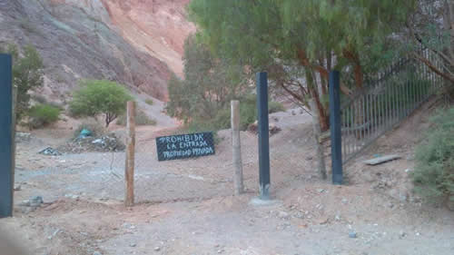

Real Chubut - Agencia de Noticias


Con los Siete Colores en una sola mano

Memo Vilte alambró el terreno ubicado en Purmamarca y anunció un emprendimiento turístico. Los vecinos protestaron y reclamaron su uso cultural colectivo. No cuenta con autorización del municipio.
De la noche a la mañana, los habitantes de Purmamarca se encontraron con parte del Cerro de Siete Colores cercado y con carteles con la leyenda “Prohibida la entrada. Propiedad Privada”. El sitio es emblema del lugar y de la provincia, pero también fue declarado Patrimonio de la Humanidad por la UNESCO. Los vecinos no tardaron en reaccionar. Realizaron reuniones, denuncias en redes sociales y sentadas al pie del cerro. El artista Edgardo “Memo” Vilte, responsable de colocar el alambrado, ante la exposición que cobró el tema difundió un video rechazando las críticas y terminó levantando parte del cerco. Sin embargo, anunció que funcionará en el lugar “un anfiteatro natural para que la gente de mi pueblo pueda mostrar su talento”. Los vecinos analizan distintas vías para evitar que avance el proyecto al pie del cerro que modificará un paisaje único en el mundo. Según la abogada ambientalista Alicia Chalabe debe primar el derecho colectivo sobre el individual.
“Cerraron entradas turísticas con valores paisajísticos increíbles, de gran valor natural y cultural. Uno de los accesos que bloquearon es el de un circuito que se une al Paseo de los Colorados y que es muy importante porque ahí tenemos los mojones de las comparsas que son populares”, señaló Martín Vilte, uno de los vecinos indignados con el alambrado apenas ocurrieron los hechos. El cerco también impedía llegar a la base del propio Cerro de Siete Colores. Si bien parte del alambrado ya no está, quedaron estructuras de metal al pie del cerro. Los vecinos permanecen en estado de alerta y advierten que Vilte podría volver a cercarlo.
En un video grabado por él mismo, en modo selfie, Memo hizo su descargo: “Estoy aquí, en mi casa. Esta semana hemos estado circulando en las redes porque lo hemos cerrado. Y sí, lo cerré. Y lo cerré para limpiarlo, para limpiar toda esta basura que como verán estamos sacando”. Los vecinos señalaron que lo que se ve en pantalla es apenas una montaña de hojas secas que siempre se acumulan en la zona con algunas bolsas de basura, pero señalaron que de ninguna manera es necesario alambrar y prohibir el ingreso para limpiar el terreno.
“Lo cerré porque lo compré legítimamente -continúa Memo Vilte en el video-, pero no lo compré para mí, lo compré para ponerlo a disposición y al servicio del pueblo. Por eso aquí va a funcionar un anfiteatro natural para que la gente de mi pueblo pueda mostrar su talento. Entonces este terreno, con esfuerzo propio, poniendo de mi patrimonio, de mi amor, va a estar al servicio de todos los purmamarqueños y para todos los jujeños. Y para todo aquel que nos visita va a haber baños, para que Jujuy siga siendo la linda provincia que es pero también para que recibamos como se debe a los amigos del mundo que nos visitan. Y repito, este espacio está libre, con entrada libre y gratuita para que nos visiten todos, se van aponer tachos de basura, y se va a exigir a las comparsas que desentierren gratuitamente pero que cuiden el patrimonio”.
Las respuestas no tardaron en llegar. “Para nosotros la decisión que tomó Memo fue arbitraria. A pesar que dice que tiene los papeles, a partir que se declaró Patrimonio de la Humanidad hay pasos que hay que seguir. Cuando un terreno se va a escriturar siempre se pone un cartel en el que se informa que hay una pelea judicial, quiénes son los que van a ser adjudicatarios y eso nunca lo vimos en el cerro, nunca creímos que ese cerro tenia dueño”, explicó Vanesa Condorí, una de las referentes de la Asamblea de Vecinos a PáginaI12.
Para Chalabe, especialista en derecho ambiental, “Vilte busca discutir cuestiones posesorias, del derecho de propiedad. Sin embargo un derecho colectivo como el paisaje es patrimonio de todos. Alguien individualmente no puede apropiarse de algo que es colectivo. Puede tener la propiedad, pero no puede poner un alambrado ni construir unilateralmente un anfiteatro. El nuevo Código Civil establece cuál es el límite cuando se trata de un bien público y colectivo”. El artículo 240 del Código establece que los derechos individuales no deben afectar el funcionamiento ni la sustentabilidad de los ecosistemas de la flora, la fauna, la biodiversidad, el agua, los valores culturales, el paisaje, entre otros, según los criterios previstos en la ley especial. Para la abogada, el paisaje es un bien que forma parte del patrimonio cultural que no puede ser apropiado individualmente.
En 2003 la UNESCO declaró a la Quebrada de Humahuaca como Patrimonio de la Humanidad. A través de la Ley 5206 se designó toda la extensión de la Quebrada como Paisaje Protegido. En ese marco se dictó el decreto 789 en marzo de 2004 que reglamenta la ley. En esa normativa se establece que cualquier proyecto, incluso en una vivienda particular, debe ser analizado por la autoridad de aplicación con participación del Municipio involucrado.
Inés Pemberton, responsable de la Unidad de Gestión de la Quebrada de Humahuaca que depende del Gobierno de la Provincia, señaló a este diario que hace no más de un mes Vilte presentó el proyecto y que lo están analizando con la directora de Patrimonio, la arquitecta Valentina Millón. También, aseguró, el artista presentó un estudio de impacto ambiental que fue derivado al Ministerio de Medio Ambiente. Sin embargo, el comisionado de Purmamarca, Oscar Tolaba, dijo que a pesar que Vilte prometió llevar los papeles a la Comisión Municipal hasta la fecha no lo hizo.
“Cuando nos habla de un anfiteatro natural, libre y gratuito nosotros nos encontramos con una contradicción, porque ahí hay un cartel, con rejas, con púa que dice prohibido pasar, propiedad privada. Cuando nos comentó su proyecto, propuso a los vecinos poner el gas natural para todos. Nosotros le dijimos que el costo de ceder el cerro para ese proyecto era muy grande y todos, éramos más de 60, le dijimos que no. Interpretamos que las intenciones no eran buenas, porque cuando la limosna es grande la verdad uno desconfía”, explicó Condorí. En el mismo sentido Laura Vilte, tía de Memo, dijo: “No le creo. Él no va a invertir si no puede sacar rédito. No le creo lo de la gratuidad”.
“Él plantea hacer un proyecto cultural. En Purmamarca hay un montón de movimientos culturales que podía apoyar, no necesitamos que haga este proyecto para reivindicar la cultura. La cultura la reivindicamos todos los días nosotros estando acá, trabajando con los recursos naturales”, dijeron.
Sin embargo lo que más rechazo generó es el lugar que eligió para realizar el proyecto, en la base del cerro. “A nosotros nos dijo que el anfiteatro iba a ser al aire libre, después nos informan que va a tener un restaurante, un bar, que va a haber baños. Entonces estamos hablando de una modificación al paisaje al pie del Cerro de los Siete Colores. Y tampoco es cierto que vaya a ser público, porque él va a poner los horarios, vamos a tener que preguntarle si podemos o no pasar, él va a poner sus condiciones entonces desde ese momento deja de ser público y gratuito”, reclamaron.
Por último, pusieron en duda el estudio de impacto ambiental que según la Unidad de Patrimonio, presentó Vilte. “Un estudio ambiental lleva varios meses y no vimos a nadie trabajando en la zona. Para hacer el proyecto que impulsa tiene que entrar máquinas. El cerro es hueco. Al haber un movimiento de este tipo, el impacto va a ser enorme. Además él pretende hacer un evento todos los días durante enero, febrero y marzo. Cuando nos opusimos a su propuesta nos dijo que le diéramos tres meses y que si no nos gusta lo deja. Y nosotros le volvimos a repetir que no. Ellos son terratenientes de la zona, tienen posibilidades de hacerlo en otro lugar, en el pueblo, pero no en la base del cerro”, explicó Condorí. Y agregó: “Acá en Purmamarca hay bandas de sikuris, los jóvenes se sienten orgullosos de su raíces y nos viene a plantear que la gente ya se olvidó de eso. Nosotros cada vez nos aferramos más a nuestras raíces que a la plata que se pueda generar”.
Fuente: Pagina 12